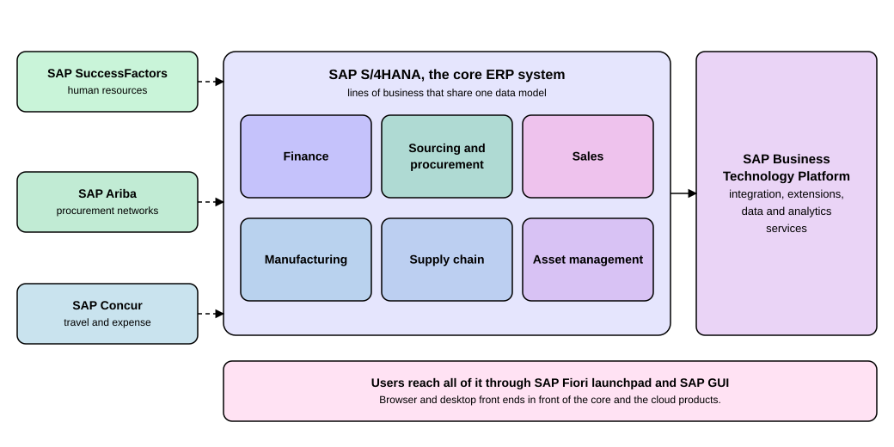

What Is SAP
|
This content was generated with the assistance of AI and should be verified against the official documentation before being relied on in production. |
SAP is a software company, and when people say "we run SAP" they usually mean one thing: a large business system, called an ERP system, that keeps a company’s money, sales, purchasing, production and people data in one place so that every department works from the same numbers. A newcomer meets the word "SAP" in job advertisements, in project names and in the names of dozens of products, and it is easy to get lost. This page gives you the map. It names the product families, shows which part is the core and which parts sit around it, explains the old module names (FI, SD, MM and so on) that people still use every day, and explains the Simplification List, the document that tells a company what changed when it moved from the old system to the new one. After reading you can place any SAP product or module on the map and know which release the statements apply to. The page is written against SAP S/4HANA 2025 FPS02 (on premise and Private Edition, documentation labeled October 2026) and SAP S/4HANA Cloud Public Edition 2608, and says where a statement applies to only one of them.
Before you read
-
Getting Started with ABAP: what an SAP system is from a developer’s point of view, if you want to program on it later.
-
Clean Core and Cloud Readiness: why SAP asks customers to keep the standard system unmodified, which the Simplification List and the cloud editions both build on.
No other SAP knowledge is needed. If a word is new, the glossary of this section explains it.
Key terms
-
SAP S/4HANA: SAP’s current core ERP system, built on the SAP HANA database and the SAP Fiori user interface.
-
Line of business (LoB): a business area, such as finance or manufacturing, into which SAP groups the functions of S/4HANA.
-
Module: the traditional name for a functional area of the older SAP systems, such as FI for financial accounting or SD for sales and distribution.
-
SAP SuccessFactors: SAP’s cloud product for human resources.
-
SAP Business Technology Platform (SAP BTP): the platform on which customers integrate systems, build extensions and run data and analytics services.
-
System conversion: moving an existing SAP ERP system to SAP S/4HANA while keeping its data and configuration.
-
Simplification List: the SAP document that lists, item by item, what changed between SAP ERP and SAP S/4HANA.
-
Simplification item: one entry of that list, describing the change to one transaction, function or data structure.
-
Compatibility scope: functions of the older suite that S/4HANA still contains for a limited time under limited usage rights.
What SAP sells
Think of a company as a set of departments: accounting, sales, purchasing, factories, warehouses, maintenance crews, human resources. Each used to run its own program with its own copy of customers, suppliers and products. An ERP system (the abbreviation stands for enterprise resource planning) replaces those separate programs with one system and one database, so a sales order created by a clerk is immediately visible to the warehouse and, once delivered and invoiced, to accounting. SAP’s central product is such a system. Its name has changed over the decades, and you will meet three of them:
-
SAP R/3 and SAP ERP (the version known as SAP ERP 6.0 and often called SAP ECC) are the older suite. They are part of the SAP Business Suite and run on many databases. SAP News states that mainstream maintenance of SAP ERP 6.0 and of Business Suite 7 runs until the end of 2027, with optional extended maintenance until the end of 2030.
-
SAP S/4HANA is the current system. The SAP Learning course on the technical layers of S/4HANA describes it as the next-generation ERP suite that replaces SAP ECC, running on the SAP HANA database and using the SAP Fiori user interface. SAP News states a commitment to maintain S/4HANA until the end of 2040.
-
SAP Cloud ERP is the name SAP Learning gives to the cloud edition, which the product documentation calls SAP S/4HANA Cloud Public Edition. The same course pairs "GROW with SAP" with the Public Edition and "RISE with SAP" with the Private Edition. The page Deployment Options is planned to compare the three ways to run it (Public Edition, Private Edition and on premise); here it is enough to know that all three are S/4HANA.
Source: SAP Learning: Describing the Technical Layers and Deployment Variants of SAP S/4HANA and SAP News: SAP S/4HANA Maintenance Through 2040
SAP S/4HANA is not an upgrade of SAP ERP in the sense of a new version number. The Simplification List says so in its introduction: S/4HANA "is not a legal successor of any SAP Business Suite product" but a new product, built entirely on the SAP HANA in-memory platform and using the SAP Fiori user experience. This is why moving from one to the other is a project of its own, covered later on this page.
Product families around the core
SAP sells many more products than the ERP system. They fall into a few families, and the figure below shows how the ones a newcomer meets first relate to each other.

Read the figure from the middle outwards.
-
The large box in the center is SAP S/4HANA, the core ERP system. Its six boxes are lines of business: finance, sourcing and procurement, sales, manufacturing, supply chain and asset management. They share one data model, which is the main difference from the older suite where each area kept its own copies of data.
-
The three boxes on the left are separate cloud products that exchange data with the core, which the dashed arrows mark. SAP SuccessFactors covers human resources. SAP Ariba covers procurement networks. SAP Concur covers travel and expense. The S/4HANA Feature Scope Description names exactly these integrations: S/4HANA can replicate employee, organizational and cost center data from SAP SuccessFactors Employee Central ("currently SAP SuccessFactors Employee Central" is its wording), it integrates with a travel management system ("currently SAP Concur"), and it integrates with external procurement systems such as SAP Ariba Sourcing and SAP Fieldglass.
-
The tall box on the right is SAP Business Technology Platform. It is where a customer connects systems, builds extensions that do not touch the core and runs data and analytics services. In the figure the arrow points from the core to the platform. On the SAP website the platform capabilities are now presented as part of SAP Business AI Platform, while the documentation on the help portal still uses the name SAP Business Technology Platform, so this site uses that name.
-
The bar at the bottom shows how people reach all of it: through the SAP Fiori launchpad in a browser and through SAP GUI, the older desktop front end.
The figure shows six lines of business so that it stays readable. The Feature Scope Description of SAP S/4HANA 2025 lists more areas in its structure: asset management, finance, human resources, manufacturing, R&D and engineering, sales, service, sourcing and procurement, and supply chain, followed by chapters on analytics and enterprise technology. So the six boxes are the core of the picture, not the complete list; human resources and the others appear in the mapping below.
The Feature Scope Description also splits what S/4HANA contains by license. SAP S/4HANA Enterprise Management holds the features for enterprises across industries, SAP S/4HANA Enhanced LoB Functions add benefit for one line of business, and SAP S/4HANA Industry-Specific LoB Functions add industry benefit. The document says that you may need a separate license for the enhanced and the industry-specific functions, and that the compatibility packs have their own usage rights. A feature being in the product is therefore not the same as being included in the license you hold, and you check the position of the feature in that document.
Source: SAP S/4HANA 2025 Feature Scope Description (PDF, document version 3.0, 2026-10-07) and SAP: SAP Business Technology Platform
The SAP S/4HANA Feature Scope Description describes the on-premise and Private Edition scope of release 2025. SAP S/4HANA Cloud Public Edition 2608 has its own documentation on the help portal, and this page does not claim that every function named below is in the Public Edition; check the Public Edition documentation for that.
The classic modules and where they went
Long-time SAP users do not talk about lines of business. They talk about modules, the functional areas of SAP R/3 and SAP ERP, each with a two-letter abbreviation: FI, CO, SD, MM and so on. The names are still alive in job titles ("an FI consultant"), in the names of components and in the documentation. In S/4HANA the same functions still exist, but SAP presents them by line of business, and several modules merged. The table maps the modules you will meet most often. The module names and the grouping come from the S/4HANA 2025 Feature Scope Description and the Simplification List; where the cloud successor is a separate product, the third column says so.
| Classic module | Where it sits in S/4HANA 2025 | What changed or what replaces it |
|---|---|---|
FI, Financial Accounting |
Finance: accounting and financial close. |
General ledger, asset accounting and Controlling post into one universal journal, so the separate reconciliation between Financial Accounting and Controlling is not needed. |
CO, Controlling |
Finance: accounting and financial close. |
Cost elements are no longer separate master data; they become part of the chart of accounts and are kept as general ledger accounts. |
SD, Sales and Distribution |
Sales: order and contract management. |
Customers are maintained through the business partner. The classic credit management is replaced by SAP Credit Management. |
MM, Materials Management |
Sourcing and procurement (operational procurement, invoice management, supplier management) and supply chain (inventory). |
Suppliers are maintained through the business partner. The material number grows from 18 to 40 characters. External procurement systems such as SAP Ariba and SAP Fieldglass integrate with the core. |
PP, Production Planning |
Manufacturing: production planning and production operations. |
Material requirements planning runs as MRP Live, a run optimized for the SAP HANA database. |
PM, Plant Maintenance, today called EAM, Enterprise Asset Management |
Asset management: maintenance management. |
Maintenance, repair and overhaul for production also appears under manufacturing. |
QM, Quality Management |
Manufacturing: quality management. |
The feature scope covers quality planning and further quality functions; a few older reporting tools are simplified. |
WM, Warehouse Management, and EWM, Extended Warehouse Management |
Supply chain: warehousing. WM becomes basic warehouse management and stock room management; EWM is listed among the enhanced LoB functions. |
WM is not the target architecture. SAP names EWM, and since S/4HANA 1909 stock room management, as the alternatives. |
PS, Project System |
R&D and engineering: enterprise portfolio and project management (project financial control and project logistics control). |
The Simplification List has many project system items, among them compatibility-scope items with and without an alternative. |
HCM, Human Capital Management |
Human resources, with the enhanced HR functions in the license-dependent part. |
Replaced by SAP SuccessFactors in the cloud or, for a system that stays on S/4HANA, by SAP HCM for SAP S/4HANA. See the section below. |
Two details in the table need explaining for a beginner.
-
The business partner is one master record that can play several roles, such as customer and supplier. The Simplification List describes it as the leading object and single entry point to maintain business partner, customer and supplier master data. In SAP ERP you maintained customers and vendors separately; in S/4HANA you work with the business partner.
-
The universal journal is one table of line items that serves both external accounting and internal (management) accounting. The Simplification List gives the reason: S/4HANA could keep only one of the two general ledgers of SAP ERP and chose the structure of the new general ledger, which supports multiple valuation methods with much higher flexibility.
Source: Simplification List for SAP S/4HANA 2025 (PDF) and the Feature Scope Description cited above
Human capital management, SuccessFactors and HCM for SAP S/4HANA
Human resources shows the cloud-successor pattern most clearly. SAP ERP had an HCM module. For S/4HANA the Feature Scope Description covers only a small core of human resources in Enterprise Management (organizational structure, time sheets, and the integration with an external HR system) and puts the rest of the HR functions under the license-dependent chapter. The integration part replicates employee, organizational and cost center data from SAP SuccessFactors Employee Central to S/4HANA.
The Simplification List adds the history. It describes SAP ERP HCM as part of the compatibility scope with limited usage rights, and tells customers that before the compatibility license expires they must move to SAP SuccessFactors or to SAP Human Capital Management for SAP S/4HANA, which exists since S/4HANA 2022 and is based on SAP ERP HCM. The HCM for SAP S/4HANA documentation for the 2025 release states the current rule: a separate license is needed, and because the business function is activated by default from S/4HANA 2025, running HCM in compatibility mode is no longer possible. The Simplification List item still describes the compatibility mode, because it is written from the point of view of a conversion from older releases; follow the HCM documentation for 2025. SAP commits S/4HANA maintenance to the end of 2040; no page read for this page states a separate end date for HCM for SAP S/4HANA, so none is given here.
Why the modules merged: lines of business
The module names came from how the SAP R/3 programs were built in the 1990s, with a team and a code base per module. A line of business is a customer’s view instead: finance serves the chief financial officer, supply chain serves the logistics manager, and each line spans several old modules. The learning course on S/4HANA says the suite integrates core functions such as finance, sales, procurement and manufacturing in one system, and that the on-premise and Private Edition versions share the same functional scope for more than 25 industries.
For you as a learner this means two vocabularies exist side by side. Documentation of S/4HANA 2025 is organized by line of business, as the table of contents of the Feature Scope Description shows. Job descriptions, projects and many older books are organized by module. When you meet "MM" on a project, think "sourcing and procurement and the inventory part of supply chain". When you read a help page about "supply chain: inventory", think "the part of MM that deals with stock".
The Simplification List
When a company that runs SAP ERP wants to move to S/4HANA by a system conversion, it needs to know what will be different. SAP answers this with the Simplification List. The introduction of the document calls it a complete inventory: SAP states that no single customer system will be affected by every item, because the list covers all capabilities of the system, including industry solutions. So the list is a catalog to compare against your own productive system, not a to-do list to read from start to finish.
What a simplification item looks like
Each entry is a simplification item. Per the introduction, an item gives a description, the business impact on the related processes, recommendations, and SAP Notes for pre-checks or custom code checks. The text of each item lives in a separate SAP Note called the business impact note, and the list names the note and the application component for every item. The list is grouped into areas that match the structure of the Feature Scope Description: cross topics, application platform and infrastructure, asset management, database and data management, finance, human resources, IT management, manufacturing, R&D and engineering, sales, service, solutions for specific industries, sourcing and procurement, and supply chain.
The items you have met above are all examples: the business partner approach, the material number field length extension, the removal of pool and cluster tables (from S/4HANA 1809 they are no longer supported and are converted to transparent tables during the conversion), credit management, cost elements, MRP Live and the warehouse management item. The list also introduces the idea of the compatibility scope: when a decision is of a strategic nature, SAP generally keeps the traditional capability available under limited usage rights so that the technical move can happen first and the change management later, at a time the customer chooses.
Where to find the current version, and what replaces the PDF
The list is release dependent: the document says that a new list is made available for each future S/4HANA release. For the 2025 release it is linked from the SAP S/4HANA on-premise page on the help portal, under the conversion and upgrade assets, next to the Feature Scope Description and the Conversion Guide. The PDF read for this page is version 1.36 of the white paper, titled for SAP S/4HANA 2025 FPS02 on its cover and for FPS01 in its running header; the cover and the content do not fully agree, so treat the exact feature pack level of the PDF with care.
SAP itself says that the PDF is no longer the preferred way to read the list. The introduction states that the PDF is still provided "for legacy reasons" and recommends two web tools instead:
-
The Simplification Item Catalog, where you choose the S/4HANA version, search by keyword and filter by line of business. It is hosted on the SAP ONE Support Portal, which is a separate site from the help portal. The S/4HANA 2025 Upgrade Guide says the catalog enhances and replaces the PDF.
-
SAP Readiness Check for SAP S/4HANA, which analyzes your own system and produces a list that is specific to your configuration, data and usage instead of the full catalog.
The documents describe the conversion as a sequence of tools: the Maintenance Planner checks add-ons, active business functions and industry solutions and creates the stack file; pre-checks delivered as SAP Notes list what must be fixed before converting; custom code analysis shows which of your own programs break against the new data structures; and the Software Update Manager carries out the conversion. Custom code is the point where an ABAP developer meets the Simplification List: your own programs must fit the data structures of the target release. The page Migrating Classic Code to ABAP Cloud shows how to review and move such code.
Which projects does the list apply to? Its title and its purpose section answer: the conversion of a system from SAP ERP 6.x or SAP Simple Finance to S/4HANA on premise or to SAP S/4HANA Cloud Private Edition, and the upgrade between S/4HANA releases. A new Public Edition customer starts from a clean system and does not convert, so the list does not apply in the same way; the Public Edition is documented on its own help portal pages.
How to use this map
A practical way to use the page in your first weeks on a project:
-
Ask which edition the project runs: Public Edition, Private Edition or on premise. It decides which documentation applies.
-
Ask whether the project is a new implementation or a conversion from SAP ERP. Only a conversion needs the Simplification List and the Simplification Item Catalog.
-
Translate each module name you hear into its line of business with the table above, then open the matching chapter of the Feature Scope Description for the real scope.
-
Note which parts are separate cloud products (human resources in SAP SuccessFactors, travel in SAP Concur, procurement networks in SAP Ariba), because they have their own documentation, release cycle and license.
-
For anything that needs custom code or an extension, ask whether it belongs in the core or on SAP Business Technology Platform, which is the clean core question of the page on clean core linked at the top.
Summary
-
SAP’s center is an ERP system, now SAP S/4HANA, which replaces SAP ERP (SAP ECC); it runs on the SAP HANA database and uses the SAP Fiori user interface. SAP commits to maintain it until the end of 2040.
-
Around the core sit separate cloud products: SAP SuccessFactors for human resources, SAP Ariba for procurement networks, SAP Concur for travel and expense, and SAP Business Technology Platform for integration and extensions.
-
The classic modules FI, CO, SD, MM, PP, PM, QM, WM, PS and HCM still name the work, but S/4HANA 2025 documents it by line of business; for example finance contains FI and CO, and WM has EWM and stock room management as its alternatives.
-
The Feature Scope Description lists what is in the product and which parts may need a separate license.
-
The Simplification List is the inventory of changes between SAP ERP and S/4HANA for conversion projects. SAP recommends the Simplification Item Catalog and SAP Readiness Check over the PDF.
-
The statements about S/4HANA 2025 come from the on-premise and Private Edition documentation; check the Public Edition 2608 documentation for what applies there.